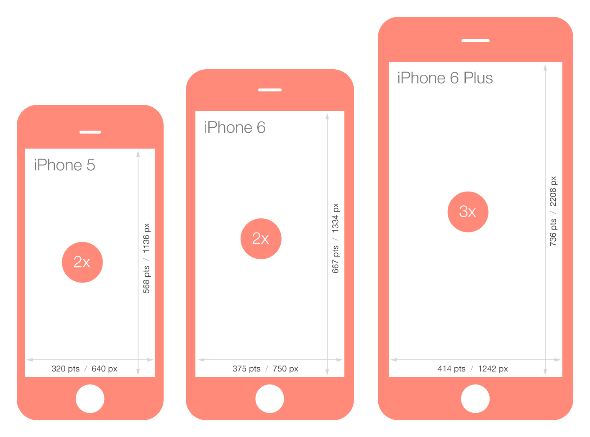
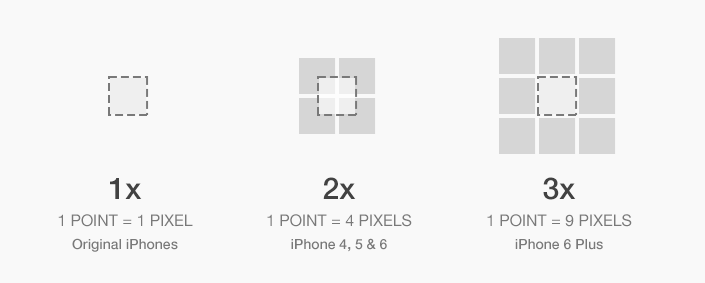
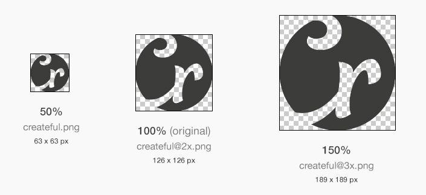
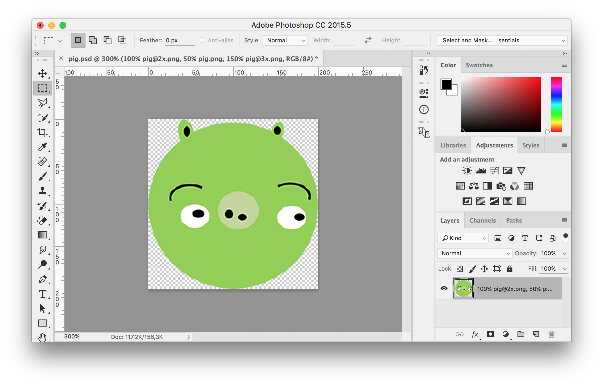
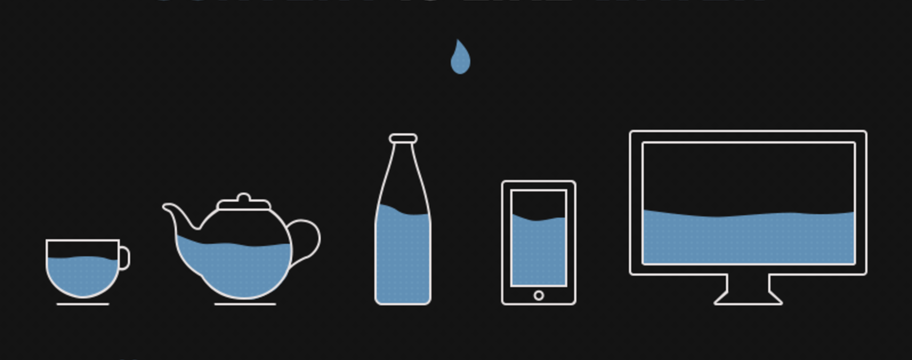

Web 03
Responsive web design
#1 Čo je to responzívny web
Responzívny dizajn dovoľuje našej webstránke aby sa prispôsobovala zariadeniam na ktorých si ju užívatelia pozerajú.

HiDPI (retina), viewport
Pixel density
Asset sizes
Photoshop generator
Photoshop generator
File ⇒ Generate ⇒ Image Assets
Nazvite vrstvu ako:
100% logo@2x.png, 50% logo.png, 150% logo@3x.png
Picture
<picture>
<source media="(max-width: 640px)"
srcset="img/logo.png, img/logo@2x.png 2x, img/logo@3x.png 3x">
<img src="img/logo.png" alt="logo"/>
</picture>
#2 Ako prispôsobiť web
- Špeciálna “mobilná” verzia stránky (http://mobile.nytimes.com/)
- Adaptívny web dizajn
- Responzívny web dizajn
#3 Adaptívny web dizajn
Je veľmi podobný responzívnemu, akurát sa neprispôsobuje obsah stránky zariadeniu, ale máme napísané
špeciálne pravidlá media queries, ktorými cielime zmeny len pre určitú šírku / výšku.
Tieto šírky nazývame css breakpoints / body zmeny.
(napríklad pre šírky 320px, 760px, 1200px, 1600px)
#4 Responzívny web dizajn
Responzívny dizajn sa prispôsobuje obsahu ako voda. Naplň vodu do poháru a voda sa stane pohárom. Naplň vodu do veľkej fľaše a voda sa stane fľašou.
#5 Mobile first
Google ranking
Ľudia dnes nakupujú hlavne cez mobily (vačšia konverzia)
<meta name="viewport" content="width=device-width, initial-scale=1">
#6 Let's get started
#7 Media queries
@media screen and (min-width: 320px) {
.box {
background-color: red;
}
}
A: Pridajte
viewport meta tag do vašej stránky
B: Pre prvý nadpis na stránke pridajte id atribút s hodnotou
catch-phrase, zmeňte farbu tohto nadpisu pomocou css
C: Pre zariadenia mobilné zariadenia (menšie ako 768px) upravte písmo na
Georgia o veľkosti 120px a
letter-spacing na hodnotu
-2px
#8 Media Queries - rozšírené
A: Vytvorte špeciálne css (nový súbor s názvom
print.css) pre tlač, tak aby bol celý web čierno biely (biele pozadie, čierne písmo).
B: Pridajte toto css do štýlov vašej stránky pod ostatné deklarácie štýlov aby ste videli či zmenilo všetko ako malo.
C: Použite media-query atribút
print aby sa tieto štýly aplikovali len pre tlač
media="print"
Pravidlá "a súčasne" (and), "alebo" (čiarka)
@media (min-width: 700px), handheld and (orientation: portrait) {
…
}
D: Zmeňte predošlé media query tak, aby pôsobilo len na mobilné zariadenia v landscape orientácii (horizontálna poloha)
#9 Flexibilná štruktúra - zlaté pravidlo responzivity
Jednotlivé šírky elementov sa zadávajú v percentách. Štruktúra reaguje na rôzné šírky zariadení.Target / context (container) = result
300px / 1000px = 0.3 ⇒ 30%
375px / 800px = 0.46875 ⇒ 46.875% (nezaokrúhľovať, používame aj 6 desatinných miest)
A: Použite vstupný projekt
http://codepen.io/anon/pen/LbdOqp. Pridajte do
index.html prelinkovanie na css súbor.
B: Pre element s s triedou
wrapper zmeňte atribút width na
max-width. Následne prepočítajte pre element aside hodnotu
width na percentá. Vďaka pravidlu
flex: 1 pre
.main sa šírka hlavného prvku vyrátava automaticky.
C: Do
aside pridajte navigáciu s piatimi rôznymi linkami pomocou
nav, ul,
li, a elementov
(nie je potrebné použiť žiadne triedy ani id-čka). Web by sa mal správať čiastočne responzívne.
D: Zapnite si mobilné zobrazenie pre devTools a zistite šírku
obrazovky pre iPhone 6 plus. Pre túto šírku napíšte media-query a pre elementy
aside a
.main pridajte pravidlo
width: 100%. Pridajte prepisujúce pravidlo
flex-direction: column. Zároveň zmeňte poradie flex prvkov.
E: Naštýlujte menu tak, aby bolo v horizontálnej polohe a aby
jednotlivé odkazy vyzerali ako tlačidlá. Môžete využiť pravidlo
border-radius: 10px
F: Vytvorte element
article a pridajte doň nadpis a 3 odstavece textu. Zmenšite text
odstavcov a na article pridajte mierny
padding 20px v percentuálnej mierke. Pod tieto odstavce vytvorte
div kontajner s triedou gallery
G: Do “galérie” pridajte 6 obrázkov (napr. https://goo.gl/JACR7B ). Všimnite si že obrázky sú čiastočne responzívne vďaka povahe webu. My to vylepšíme flexboxom a responzívnou technikou pre obrázky.
H: Každý obrázok “zawrapujte” (zabaľte) do elementu div s triedou
gallery-box. Nastavte
.gallery element aby sa správal podľa pravidiel FLEX (
row, wrap,
justify-content: space-around)
I: Pre obrázky nastavte pravidlá, aby sa šírka obrázka
vyplnila na maximum a výška automaticky. Pridajte padding 0.5% pre elementy
.gallery-box
J: Približne pri 930 pixeloch sa nám dizajn mierne rozbije. Nastavte všetkým
.gallery-box elementom pravidlo
flex:auto . Využite media query s and operátorom aby ste zmenili šírku
.gallery-box elementov na 48%, len v prípade že
šírka je väčšia ako šírka iPhone a menšia ako 930px
Bonus talk a úloha
Font sizing:
px | em | rem | vw …. Naštýlujte nadpis tak, aby využíval jednotku
vw
Bonus 2
Pripravte responzívny header pre projekt
Bonus material
Ďaľšie príklady pravidel pre media queries môžete nájst napríklad tu: media queries
Viac o high-resolution obrázkoch
Debuggovanie na vlastnom mobile pomocout remote-debuggingu